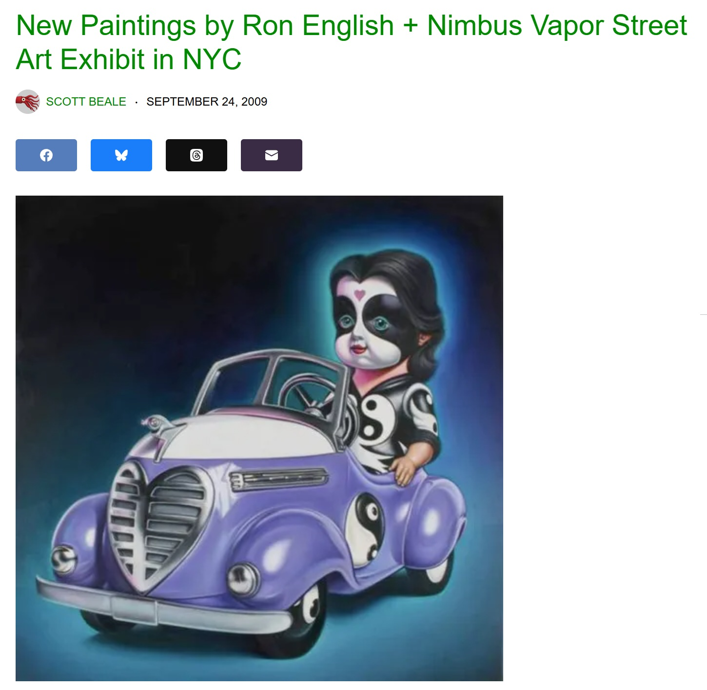

Exhibitions
Nimbus Vapor, Opera Gallery, New York, New York, US, October 1, 2009.
Literature
Ron English, Status Factory: The Art of Ron English (San Francisco: Last Gasp of San Francisco, 2014), p. 50. ISBN 978-0867197891.
Ron English, Original Grin: The Art of Ron English (Paris: Cernunnos, 2019), p. 124. ISBN 978-2374950938.
Notes
This work appears in Scott Beale, “New Paintings by Ron English + Nimbus Vapor Street Art Exhibit in NYC,” Laughing Squid, September 24, 2009, available here, accessed April 17, 2026.
It also appears in exhibition photographs associated with juggernut3’s “Openings: Ron English – “Nimbus Vapor” @ Opera Gallery” on Arrested Motion, available here, accessed April 17, 2026.
Ancillary Documentation
